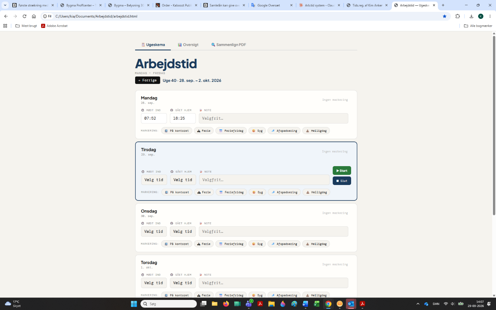
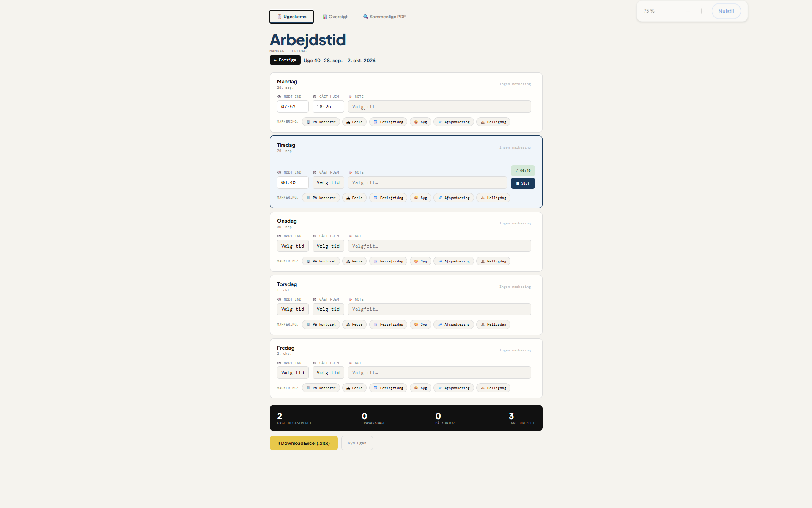
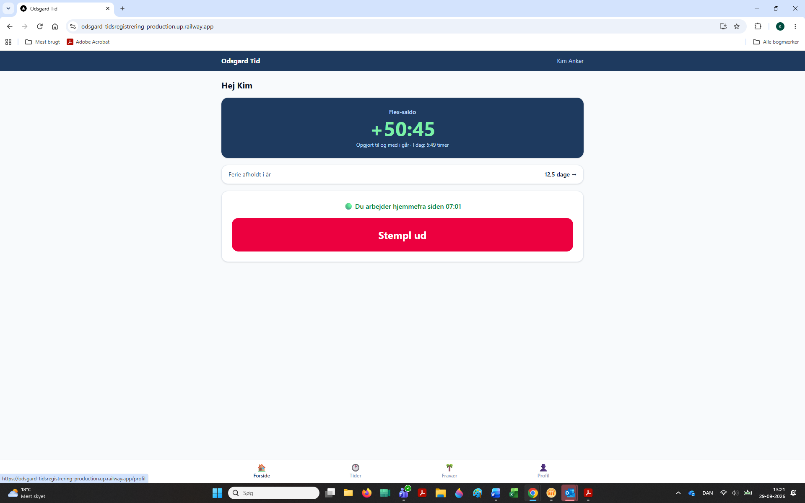
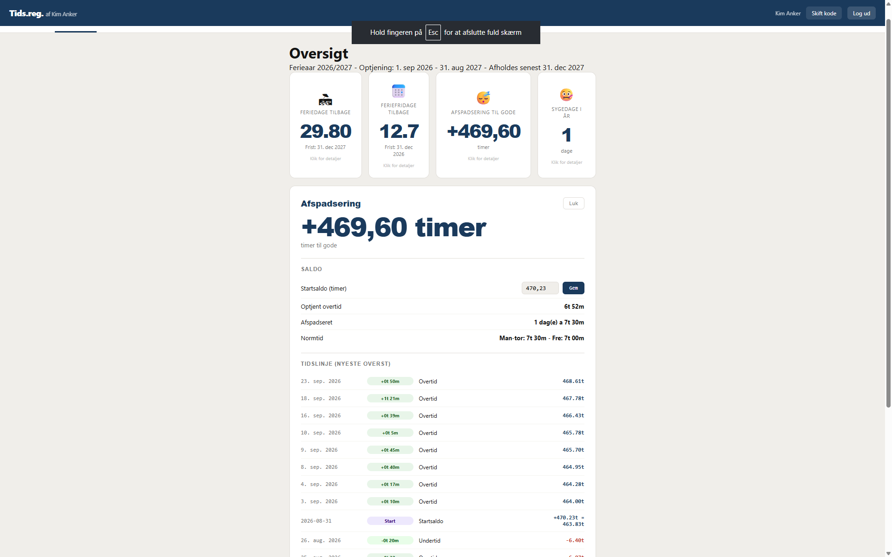
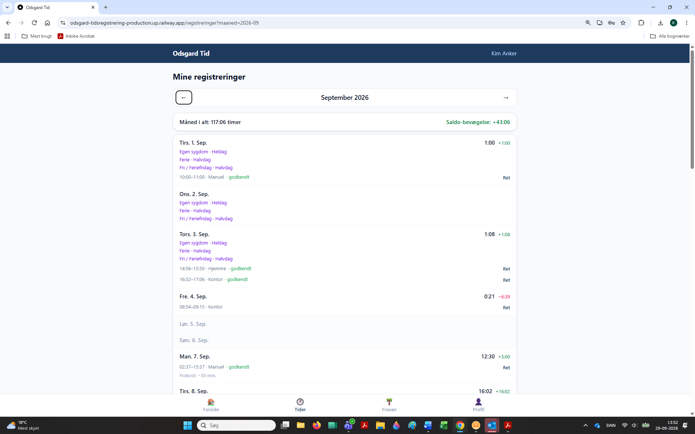
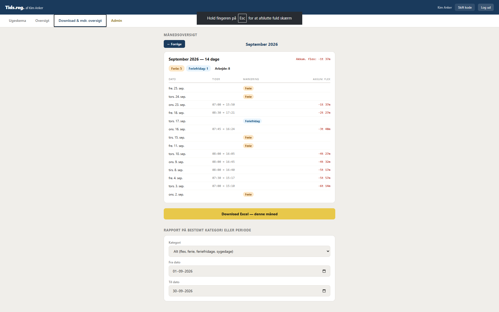
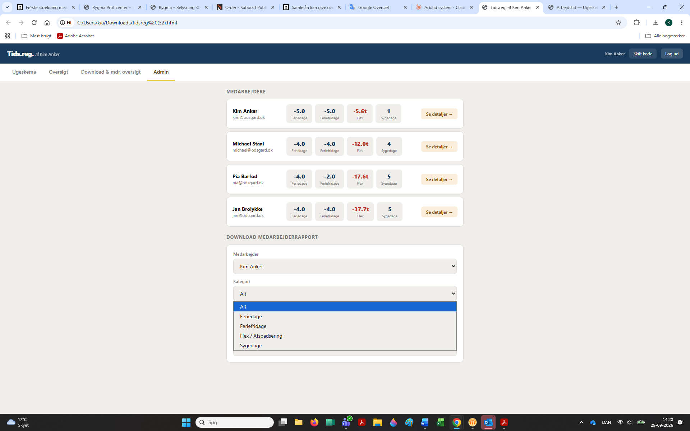

Hej Gustav,
Det er et rigtig fint stykke arbejde, du har lavet!
Det er skønt at se, at der langt om længe er en god tidsregistreringsløsning på vej til os.
Tankerne bag systemet er super gode, og det flugter i høj grad med de principper og erfaringer, jeg selv har gjort mig og brugt i min egen tidsregistrering den seneste tid.
For at understøtte hverdagen bedst muligt for alle medarbejdere og skabe et så smidigt workflow som muligt, har jeg samlet en række tanker, erfaringer og konkrete forslag til tilføjelser nedenfor.
Tanken med den daglige registrering er, at det skal være så nemt og intuitivt som overhovedet muligt. Så snart man åbner systemet, bør det automatisk stille skarpt på "i dag". Her skal man med ét enkelt tryk på Start eller Slut kunne registrere sin arbejdstid – eller vælge fravær såsom ferie, sygdom eller afspadsering.
Ved at samle stemplingen direkte på ugeoversigten slipper vi for at have en separat side til stempling og en anden til oversigten. Én samlet ugevisning er nok, hvor man kan foretage det hele i samme skærmbillede. Samtidig vil det gøre oplevelsen væsentligt mere overskuelig, hvis hver visning dækker præcis én uge ad gangen, så man sidst på måneden slipper for at skulle scrolle ned over en lang liste.


Et godt dashboard handler i høj grad om at give den enkelte medarbejder fuld gennemskuelighed over sine egne forhold. Det skaber tryghed og sparer huset for en masse manuelle forespørgsler og administration.
På den nye forside/dashboard vil det være en kæmpe hjælp med en enkel oversigt over nøgletal: Feriedage tilbage (med udløbsfrist), Feriefridage tilbage, Sygedage i år samt Afspadsering/Flex-saldo. Flex-saldoen er allerede super fin, som den er i dag. Til gengæld kan vi med fordel fjerne tallet for "måned i alt i forhold til normtid" på toplinjen – det kan forvirre i forhold til flex-saldoen, som er det tal, der reelt har interesse.
Hvis man klikker på ét af felterne (f.eks. Feriedage), skal man nemt kunne se historikken for, hvordan tallet er opgjort. I henhold til gældende regler skal historikken kunne gemmes og vises for minimum 12 måneder (og op til 5 år i datagrundlaget), så man ikke kun kan se 60 dage tilbage.


Når det kommer til ferie og fravær, oplever vi ofte nogle praktiske scenarier i hverdagen, som kræver en fleksibel opbygning:
Fravær på forskud og efterregistrering: Hvis man skal holde 14 dages ferie frem i tiden, bør man kunne lægge det ind i én samlet handling i stedet for at skulle logge på hver dag eller taste hver enkelt dag manuelt bagefter. Det samme gælder ved hjemkomst fra fravær – her skal det være nemt at registrere perioden samlet.
Skelnen og logik i fravær: Der bør skelnes tydeligt mellem "Feriefridag" og "Fri", da fri er arbejdsgiverbetalt, mens feriefridage trækkes fra den enkeltes optjente saldo. Samtidig er det vigtigt, at systemet forhindrer dobbeltregistreringer (f.eks. at stå som både syg, på ferie og på arbejde samme dag). Hvis en dag er valgt som heldagsfravær, bør systemet automatisk låse for, at man kan stemple ind/ud den dag.

For den enkelte medarbejder giver det en god tryghed altid at kunne trække sin egen oversigt ud i Excel – enten for en hel måned ad gangen eller opdelt på bestemte kategorier som sygdom, feriefridage, ferie og afspadsering.

På administrationsdelen (som er låst) kan man få et fuldstændigt og enkelt overblik over alle medarbejderes saldi samt mulighed for at trække tilsvarende rapporter ud. I den forbindelse vil jeg også foreslå, at vi genovervejer kravet om, at hver eneste lille ændring skal godkendes af admin.
Vi laver jo kun ændringer, når der er en reel grund til det, og et godkendelsesflow på alt kan hurtigt skabe en masse unødig administration i en travl hverdag – og indirekte sende et signal om mistillid. I stedet kunne admin have en samlet oversigt over foretagne ændringer og blot tage en snak, hvis der er noget uafklaret.

Til sidst er der et par mindre tekniske og praktiske ting, som vil gøre oplevelsen helt skarp:
Login & stempling: Det bør være lige så simpelt at logge ind, uanset om man er på kontoret eller arbejder ude. Det vigtigste er tidspunktet – lokation kan evt. tilføjes som en note. Ligeledes er det vigtigt at sikre, at systemet fungerer optimalt på mobil (f.eks. i Safari på iPhone), og at en standard "Glemt adgangskode"-funktion er tilgængelig, og ikke kun oprette ny adgangskode ved at indtaste den nuværende, da det er her, de fleste har brug for hjælp.
Småkorrektioner: Spærretid på 3 minutter ved fejlstempling kan med fordel fjernes, stavefejlen på forsiden korrigeres ("Stempl" til "Stempel"), og popup-vinduer ved manuelle rettelser bør lukke automatisk efter indsendelse. Endelig bør reglerne for det automatiske frokostfradrag (30 min.) gøres helt konsekvente over hele linjen.